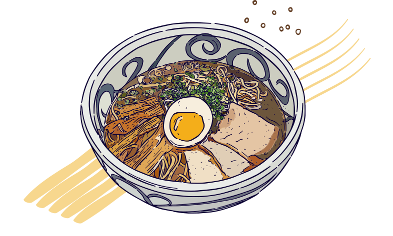

A Bowl of Love From Japanese Cuisine
Ramen (ラーメン) is a noodle soup dish that was originally imported from China and has become one of the most popular dishes in Japan in recent decades.

Ramen (ラーメン) is a noodle soup dish that was originally imported from China and has become one of the most popular dishes in Japan in recent decades.

Hard boiled, soft boiled, raw and marinated eggs...

Made of chicken and a white and creamy soup...
Made of pork bones which have been boiled down...